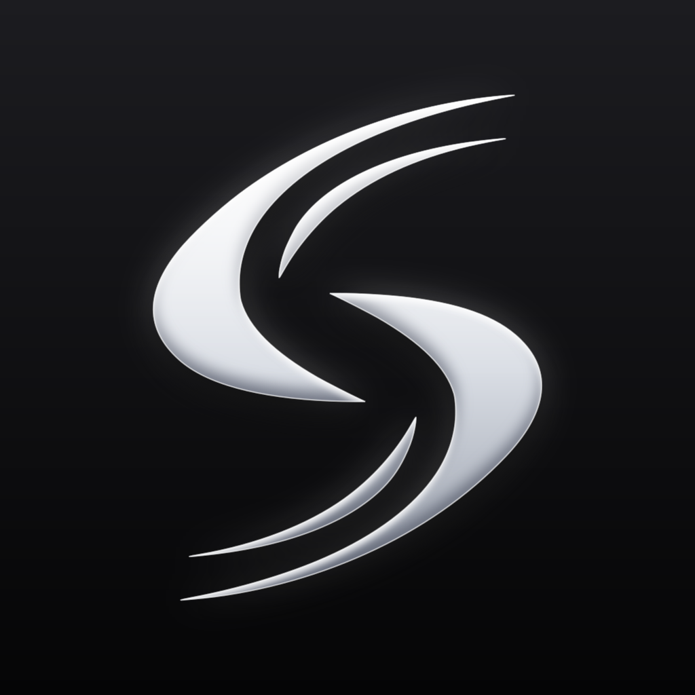
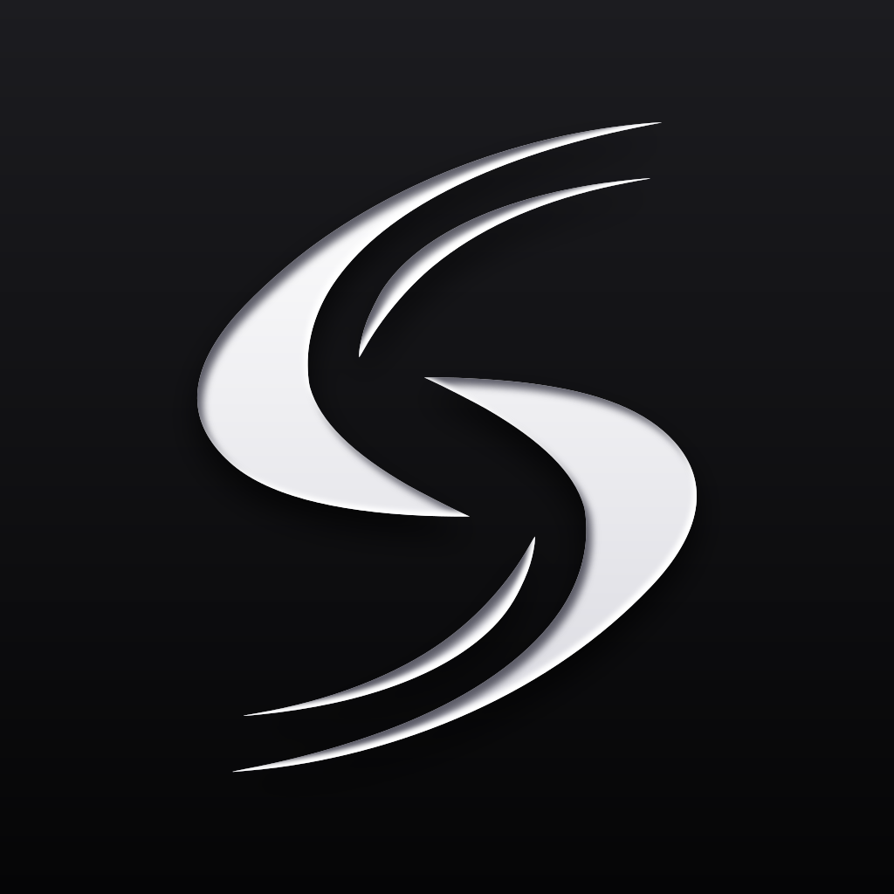
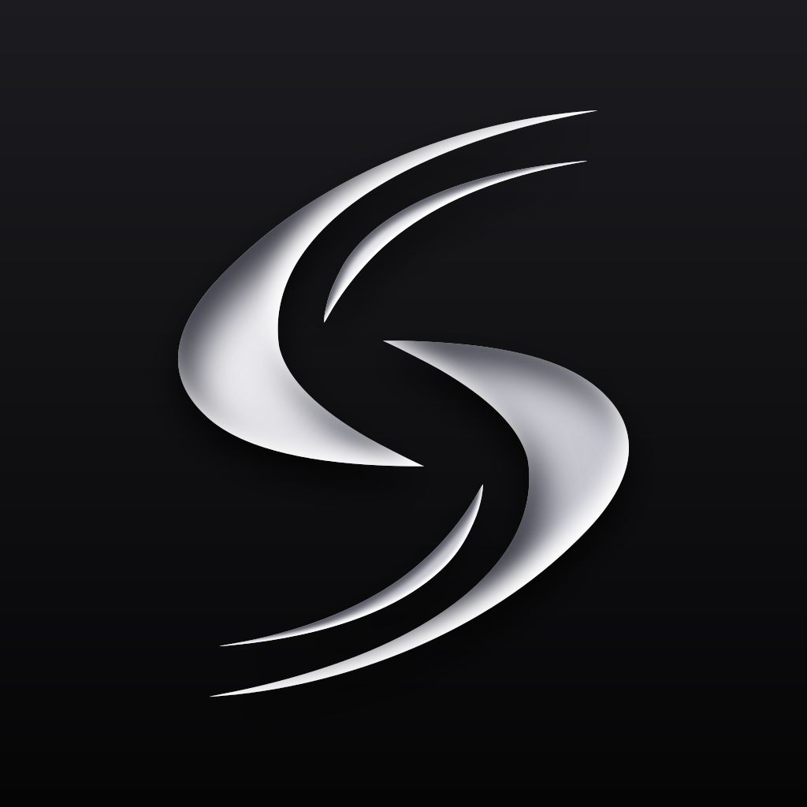
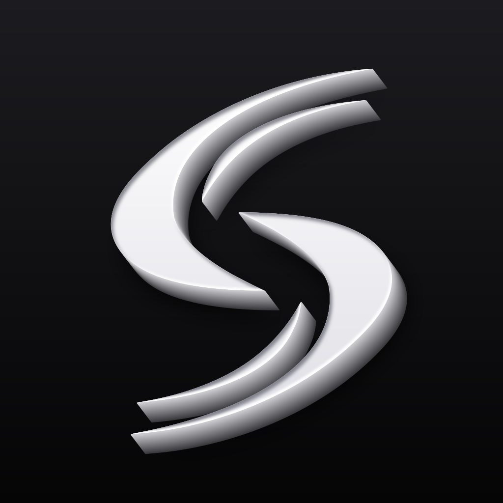
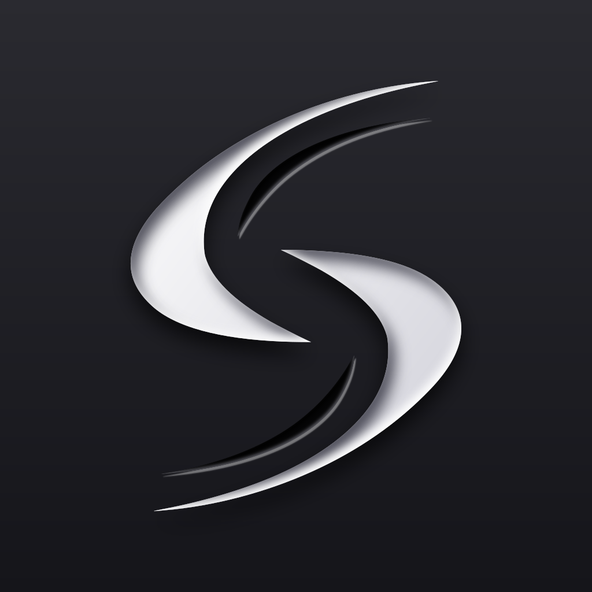
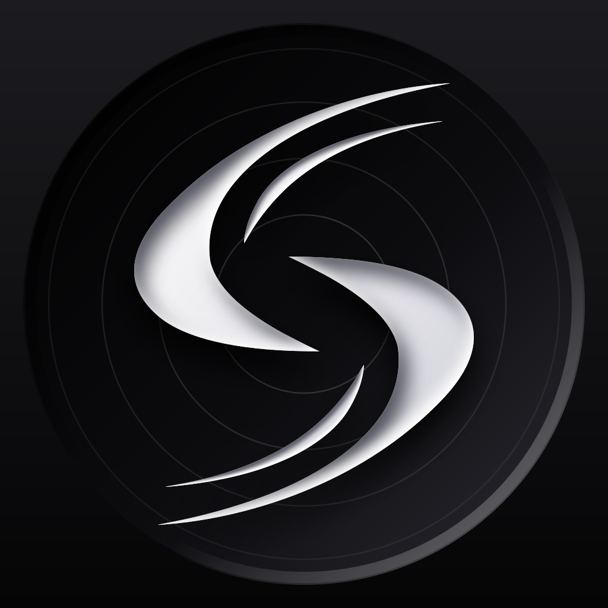
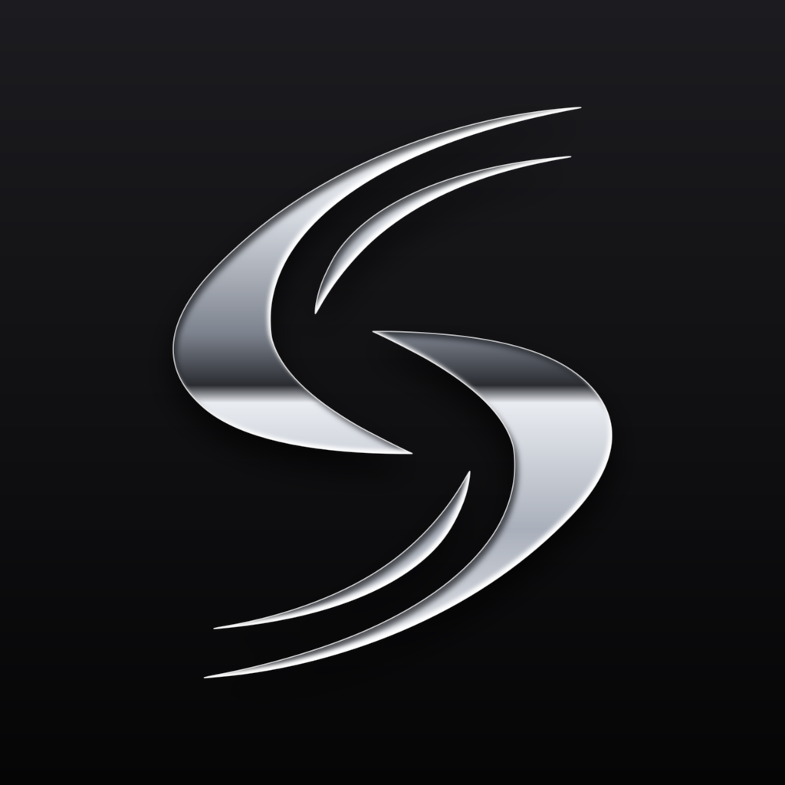
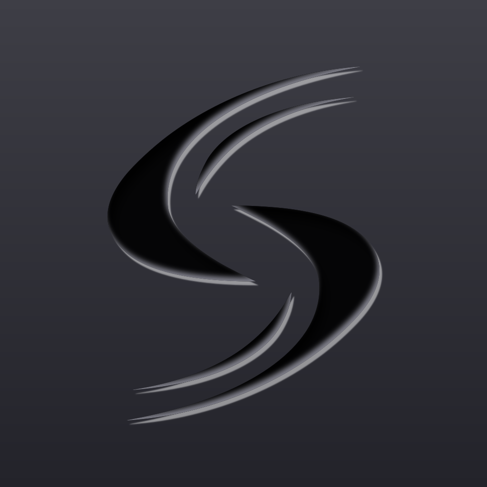
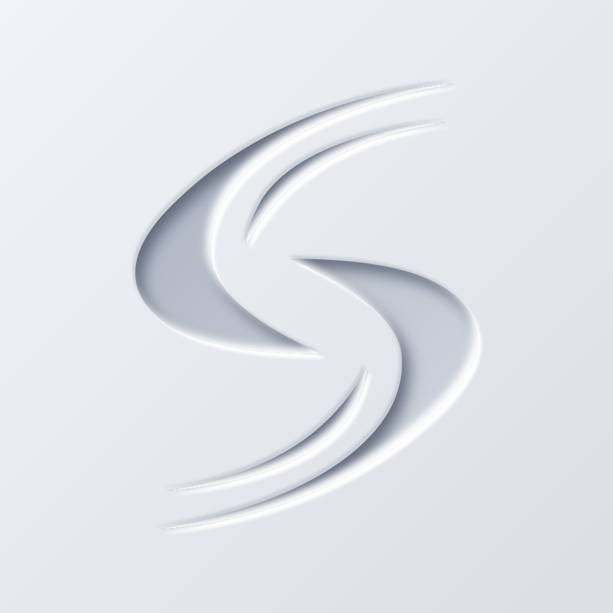

Значки приложения Sonar — основной «Стекло» и ещё 9

1. СтеклоМатовое стекло: блик по верху, тёмный низ, светящийся край.
2. ПлоскийПрежний значок: белая S без объёма.

3. ФаскаКак вырезанный из металла знак: грань плоская, края скошены.

4. ПодушкаВздутый глянцевый объём, как надувной знак. Эхо остаётся тонким.

5. БлокЗнак — толстая объёмная деталь: видна боковая стенка, под ней тень.

6. ЭхоЛопасти выпуклые, а «эхо» — вдавленные в плиту канавки: два уровня глубины.

7. КолодецПлита вогнута чашей, по дну идут кольца эха, знак вздут над ней. Глубина и в плите, и в самом знаке.

8. ХромЗеркальный металл с тёмной линией горизонта по центру. Самый «железный» из набора.

9. ВдавленныйЗнак продавлен в тёмную плиту: тень сверху внутри, светлая кромка снизу.

10. СветлыйСветлая плита и мягкая вмятина. Для светлой темы и бумажных носителей.